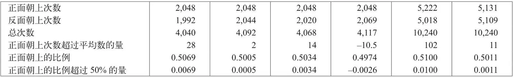

英文
英文皮亚焦
编者按
约翰·冯·诺伊曼最近宣称，他将证明在对量子物理给出的因果解释方面没有任何一个理论能够超过当今的量子理论。虽然一些物理学家，例如爱因斯坦，认为量子理论也许仅仅是一个近似理论，具有统计特征，因为它忽视了物理现实中某些更深层次的细节，但冯·诺伊曼却不这样认为。在这篇文章中，亨利·皮亚焦对这两种不同的观点进行了评论，最后得出结论：虽然证据不利于决定论，但也不能将其完全排除。许多年以后，约翰·贝尔又推翻了冯·诺伊曼的观点，这使得人们开始再次关注决定论的量子理论。 英文
发表在1944年7月22日《自然》上的一篇题为《决定论的崩溃》的短文[1]，简单地描述了冯·诺伊曼的观点，即不能通过对一些精确的因果规律取平均来得到量子理论的结果。如果仅从编辑部收到的关注这一观点的信函的数量来看，我们发现很多人都对这一观点表示怀疑，并且希望能就这一观点建立的基础进行更详细的讨论。巴卡斯[2]先生认为，当考虑大量的事件时，统计规律与非决定论是不相符的，他还提到，如果100万个光子的最终行为结果是确定的，那么，前999,000个光子的行为必定会影响另外1,000个光子的行为。惠特克[2]教授（现在是埃德蒙爵士）对此的回应是：我们也许可以分析一下抛掷硬币的行为。他特别问道，对于抛掷硬币来说，根据一般的概率理论计算出来的统计规律是涉及了“隐秘决定论”（即由于缺乏详细信息而隐藏了真正的决定论）的假设，还是仅与对称性假设有关。这一回应又引发了很多评论文章，因其数量太多致使编辑部很难将其全部发表，而且我也被要求针对这些观点给出有关的解释。我将从抛掷硬币的实验结果开始谈起，并将它与理论值进行比较。之后，我也将对气体的动力学理论作相似的分析。最后，也是最为重要的，我将详细解释冯·诺伊曼对于因果律的假设反驳，并且给出支持和反对它的理由。 英文
法国博物学家布丰不停地抛掷一枚硬币，直到他得到2,048次正面朝上为止。德·摩尔根[3]引证了这一结果，并介绍了由他的学生或相关人员完成的3个与之相似的实验。这种规定以正面朝上为结束的抛掷实验让正面朝上的结果略占优势，但是，这个优势太小以至于可以忽略不计。杰文斯[4]以稍为不同的方式进行了更为广泛的实验，他以“10个硬币（通常是面额为1先令的硬币）作为一组”，并一起抛掷。他做了两个系列的实验，各含1,024次这种10个一组的抛掷，因此每个系列中都抛掷了10,240个硬币。上述6个实验的统计结果如下：

如果我们查看这些统计数字，就很容易曲解“统计规律”的含义。有些人认为，正面朝上和反面朝上的次数一定会是相等的，这显然是不正确的。实际上，前4个实验都抛掷了约4,096次，正面朝上的次数超过平均数的最大值为28，而最后2个实验各抛掷了10,240次，其最大值为102，因此，偏离平均数的差值实际上是在增加的。这一点同理论吻合得非常好，理论认为，在一次抛掷硬币的过程中，正面朝上的概率为0.5，据此推断，如果抛掷n（一个很大的数字）次硬币，那么偏离预期平均值n/2的差值很可能会超过 ，但是几乎可以肯定（99.73%的可能性）该值会小于
，但是几乎可以肯定（99.73%的可能性）该值会小于 。当n = 4,096时，“很可能的偏差”最接近整数22，而“几乎不可能出现的偏差”是96。当n = 10,240时，相应的值为34和152。因此，尽管实际的偏差要比一些人预期的大且不均衡，但与这个理论还是非常一致的。但是，根据理论，“统计规律”这个短语真正的意义指的是正面朝上出现的比例应该非常接近0.5，其“很可能的偏差”为，“几乎不可能出现的偏差”为
。当n = 4,096时，“很可能的偏差”最接近整数22，而“几乎不可能出现的偏差”是96。当n = 10,240时，相应的值为34和152。因此，尽管实际的偏差要比一些人预期的大且不均衡，但与这个理论还是非常一致的。但是，根据理论，“统计规律”这个短语真正的意义指的是正面朝上出现的比例应该非常接近0.5，其“很可能的偏差”为，“几乎不可能出现的偏差”为 。随着n的增加，这两个偏差都会无限地减少。我们也可以根据这个比例的均方根或“标准偏差”来估算其理论偏差。得到的值为
。随着n的增加，这两个偏差都会无限地减少。我们也可以根据这个比例的均方根或“标准偏差”来估算其理论偏差。得到的值为 ，稍后我们会将这一结果与海森堡的测不准原理进行比较。 英文
，稍后我们会将这一结果与海森堡的测不准原理进行比较。 英文
现在我们来讨论一下上面计算所依据的概率理论的一个重要的不妥之处。正如陆军中校戈尔德[5]指出的，对称性的假设不仅存在于硬币本身的正反两面，而且还存在于抛掷硬币时手的动作。当用机器取代手时，比如霍莱斯基[6]设计的机器，实验结果就出现了明显的不对称性。通过对驱动杠杆的压力进行适当调节，在抛掷100次硬币后，他得到了98次正面朝上的结果。接着，他轻微地改变了压力，初始时硬币在机器上同样保持正面朝上，但在接下来的100次抛掷中，只得到了一次正面朝上的结果。在这种情况下，抛掷机制不是一个隐藏的参数，而是可见并且确定的参数，而在一般的抛掷情况下，这个参数是不确定的，而且在我们所能控制的范围内，它就是对称分布的。在杰文斯的实验中，正面朝上的情况太多很可能是因为抛掷情况缺乏对称性。不管情况是否如此，很明显，在抛掷硬币的实验中，概率理论给出的事实描述是不完善的。 英文
因此，认为完美正态分布的性质必定严格符合物理现实是错误的，不过通常情况下这些性质可以为事实提供一个很好的近似。我们不能仅仅通过宣称抛掷细节搅乱了正态分布的纯正性，从而否认这些细节的存在。事实上，正是因为分布太过纯正，超出了物理的现实，因此，它才不是对现实的完整描述。同样的道理也适用于气体的动力学理论，但在这种情况下，该理论中[7]的对称性假设更接近于实际的事实。但仅仅只是接近而已，就像在经典物理学的其他地方一样，在这里纯粹的统计集合是不存在的。 英文
这使我们遇到这样一个问题，即这样的集合是否也存在于非经典物理学中，特别是量子力学之中呢？为了得到解答，我们将查证冯·诺伊曼的观点，其中不仅涉及他的著作《量子力学的数学基础》（1932年），还涉及他于1937年在华沙[8]用英文写的简短解释和对此所作的进一步的讨论。其起始点是对数学的“超大投影”算符所遵循的定性法则的分析，该算符与量子力学中出现的物理量相对应。一切都基于六条法则，其中有两条似乎尤为重要。一条是叠加原理，它适用于不必同时测量的物理量。另一条是严格的函数对应性原理；比如说，如果一个算符代表一个物理量，那么算符的平方就代表这个物理量的平方。 英文
然而在我看来，过分注重这些简单的法则使我们忽视了通过“超大投影”算符的定义所带来的其他一些更为重要的条件。这个定义暗含了量子力学的一些特定结果，并且这些简单的法则仅仅是最后的必要条件。冯·诺伊曼认为集合分为“纯集合”和“混合集合”两种。纯集合的主要性质是它不能被表示为两个不同集合的混合。量子力学的定性法则表明与其有关的集合必然是纯集合，而如抛掷硬币或气体粒子等所有服从因果论的集合都必然是混合的。因此他得出结论：因果论与量子力学是不兼容的，并且在气体动力学理论中用到的平均因果论的方法不能应用于量子力学。他认为，对于一个受波函数控制以外还受其他条件（“隐参量”）控制的设定系统，没有必要去深究细节。这些隐参量将会打乱量子力学的定性法则。他承认当时的量子力学的确是有缺陷的，尽管它在解释物理现象方面取得了巨大的成功，但以后仍然有可能被证明是错误的。不过，每一个理论都是这样的；我们永远不可能声称用实验证明了它，只能说目前这是对实验的最好总结。 英文
因此，冯·诺伊曼得出结论：目前在量子力学中没有任何理由能够推测出因果律的存在。惠特克[9]认为这个结论不仅是新奇且出人意料的，而且几乎是令人难以置信的，他还用兴奋的语言对其表示认同，“必然性的联系已被打破；对于某几类现象，隐秘决定论将完全被推翻”。 英文
其他评论则对此持有更多的怀疑。在华沙会议上，会议主席比亚洛布尔泽斯基在听取了冯·诺伊曼的演讲后，承认现在确实不可能将因果律纳入量子力学的理论框架中，但他对这一理论框架的逻辑连贯性提出了质疑。他认为，由于没有考虑到不可逆变化，也由于在一定的测量条件下终态的不确定性消失了，而且不连续性和不确定性的假想与现实并不相符，所以这是有缺陷的。他认为有必要根据测量提出一个新的假定。在会议后期的一个会上，海森堡在一封来信中说，当前的量子理论还无法为核物理学或宇宙射线给出一个逻辑一致的解释。 英文
许多评论家都质疑这些没有实验作为依托的完全抽象的理论观点。当然，尽管像戴维孙和革末在电子衍射方面的实验以及康登和格尼在放射性方面的实验都对测不准原理进行了完美的阐释，但是人们依旧无法说明这个不确定性究竟只是因为缺乏具体知识还是确实无法确定。惠特克[9]从一个稍微不同的角度阐述了自己的观点，惠特克是冯·诺伊曼的支持者，但是他通过引用一篇平面偏振光通过尼科尔棱镜的文章来表明，这种现象不能用控制着由光子引起的一些隐参量的因果律来解释。但是佩尔泽[10]给出了两个模型，其中的隐参量能够存在并遵循因果律，而这些隐参量至少部分来源于尼科尔棱镜。从这点他得出推断：惠特克和冯·诺伊曼的观点是不完整的，尽管他也认同他们关于量子现象确实不可确定的结论。 英文
我对冯·诺伊曼的批判基于一篇由爱因斯坦、波多尔斯基和罗森[11]共同撰写的论文。他们基于对曾经与该系统发生过相互作用的另一系统的测量来考虑对该系统进行预测的问题，他们得出的结论是：仅仅用波函数来描述现实世界是不完整的。因为波函数只是描述概率分布的一种数学方法，这个结论和我对于抛掷硬币实验所得的结论几乎完全一样。因此我非常不自信地提出：因果律的存在还没有完全被否认。爱因斯坦的观点确实已经被玻尔[12]推翻，但还是存在一些其他依据来支持它。事实上，量子力学中关于电子与电子间无法区分的假设出现了，至少对我来说，这并不表明大自然是不可理解的，它仅仅说明量子力学是不完整的。但我并非想说量子力学与抛掷硬币没有任何区别。两者之间一个很明显的不同是在抛掷硬币中正面朝上的比例的标准偏差仅取决于抛掷的次数，并且可以无限减小；但是在量子力学中测不准原理给出了动量与位移的标准偏差的乘积的最小值，即h/4π。这个结果中普朗克常数的出现似乎说明有一些新的东西尚待挖掘。我觉得如果冯·诺伊曼的结论中也包含这个常数，而不仅仅是一些完全定性的分析的话，我们将更容易接受他的结论。当然，也许在其背景理论中也存在像隐参量一样的某个常数！ 英文
综上所述，我将引用伯特兰·罗素[13]在1936年表述的观点：目前尚没有强有力的理由支持物理学中的完全决定论（因果律），但也没有任何理由反对它，并且理论上也不会存在这种理由。但是罗素没有提到冯·诺伊曼的观点。我的结论是现在的证据不利于完全的因果律，但是这个问题依旧没有被彻底解决。 英文
（刘霞 翻译；赵见高 审稿）